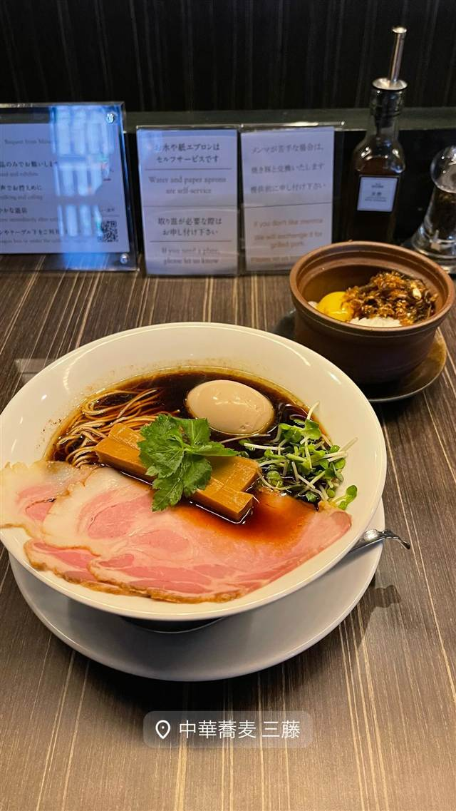

ラーメン · 醤油・中華そば · 緑が丘
中華蕎麦 三藤
鶏と4種の貝出汁を合わせたWスープの中華そば
中華蕎麦 三藤
目黒区緑が丘で2014年に開業した中華蕎麦店。蕎麦屋の家に生まれ和食店で修業した店主が手がける、鶏と4種の貝出汁を合わせたWスープと、そばのような喉越しの自家製熟成麺が評判で、ミシュランガイド東京に7年連続で掲載されている。
TRIVIA
豆知識
- 店主は蕎麦屋の家に生まれ和食店で修業した経歴があり、麺は日本蕎麦のような喉越しに仕上げている
- スープは鶏だしに、はまぐり・あさり・しじみ・帆立の4種の貝だしを合わせたWスープ
REVIEWS
世間の評判
92.7ラーメンDB3.67食べログ
トリュフ香る鶏白湯の独創性
- トリュフ＆ポルチーニなどイタリアンを思わせる独創的な一杯が話題になっている
- 膨よかな鶏白湯スープのコクと上質な味玉を評価する声が多い
- ミシュランガイド連続選出の実力を裏付ける味だという声もある
ラーメンデータベース 口コミ69件・最新 2026-09
| 創業 | 2014年4月、緑が丘にオープン |
|---|---|
| 看板 | 鶏醤油中華蕎麦 |
| こだわり | 鶏をじっくり炊き出したスープに、はまぐり・あさり・しじみ・帆立の4種の貝だしを合わせたWスープ。国産小麦「春よ恋」に手を加え恒温恒湿庫で熟成させたオリジナルの細麺を使用。 |
| 掲載・評価 | ミシュランガイド東京に7年連続掲載（ビブグルマン7年連続掲載） |
| どこから | 23区の外れ・近郊 |
| 営業時間 | 月 11:00-16:00 火 休み 水〜日 11:00-16:00 |
| 予算 | 昼 ¥1,000～¥1,999 |
| 定休日 | 火曜 |
| 場所 | 緑が丘 東京都目黒区緑が丘 |
| メモ | 食券制 |
食べたもの：醤油ラーメン
NEARBY
近い店・同じ系統の店
-
 ★
醤油・中華そば 大口駅
中華そば 髙野
元美容師の店主が作る、昆布水に浸した自家製麺の中華そば
昼 ¥1,000～¥1,999 夜 ¥1,000～¥1,999
★
醤油・中華そば 大口駅
中華そば 髙野
元美容師の店主が作る、昆布水に浸した自家製麺の中華そば
昼 ¥1,000～¥1,999 夜 ¥1,000～¥1,999
-
 ★
醤油・中華そば 池尻大橋駅
八雲（やくも）
骨を一切使わないのに深いコクの特製ワンタン麺
昼 ¥501～¥1,000 夜 ¥501～¥1,000
★
醤油・中華そば 池尻大橋駅
八雲（やくも）
骨を一切使わないのに深いコクの特製ワンタン麺
昼 ¥501～¥1,000 夜 ¥501～¥1,000
-
 ★
醤油・中華そば 六本木駅
入鹿TOKYO 六本木店
鶏・豚・貝・海老を別々に炊く独自のカルテットスープ
昼 ¥1,000～¥1,999 夜 ¥1,000～¥1,999
★
醤油・中華そば 六本木駅
入鹿TOKYO 六本木店
鶏・豚・貝・海老を別々に炊く独自のカルテットスープ
昼 ¥1,000～¥1,999 夜 ¥1,000～¥1,999
-
 ★
醤油・中華そば 千歳船橋
中華そば 西川
永福町大勝軒などで8年修行した店主の煮干しそば、百名店5年連続
昼 ¥1,000～¥1,999 夜 ¥1,000～¥1,999
★
醤油・中華そば 千歳船橋
中華そば 西川
永福町大勝軒などで8年修行した店主の煮干しそば、百名店5年連続
昼 ¥1,000～¥1,999 夜 ¥1,000～¥1,999
-
 ★
醤油・中華そば 祖師ヶ谷大蔵駅
世田谷中華そば 祖師谷七丁目食堂
柴崎亭店主が手がける、煮干しと小豆島醤油の中華そば
昼 ～¥999 夜 ～¥999
★
醤油・中華そば 祖師ヶ谷大蔵駅
世田谷中華そば 祖師谷七丁目食堂
柴崎亭店主が手がける、煮干しと小豆島醤油の中華そば
昼 ～¥999 夜 ～¥999
-
 ★
醤油・中華そば 鷺沼
麺処 懐や
中村屋仕込み、一度に2杯しか作らない淡麗系
昼 ～¥999
★
醤油・中華そば 鷺沼
麺処 懐や
中村屋仕込み、一度に2杯しか作らない淡麗系
昼 ～¥999
ONSEN & SAUNA